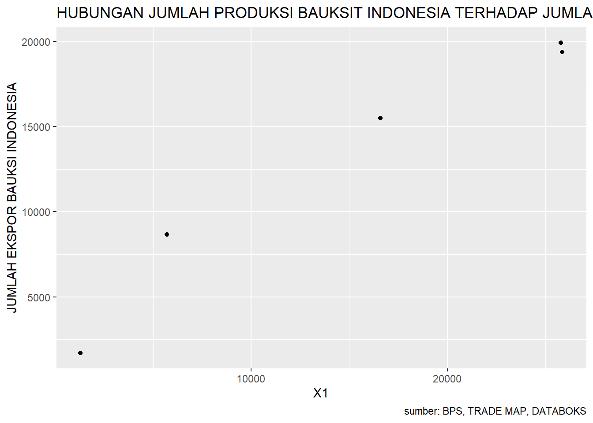
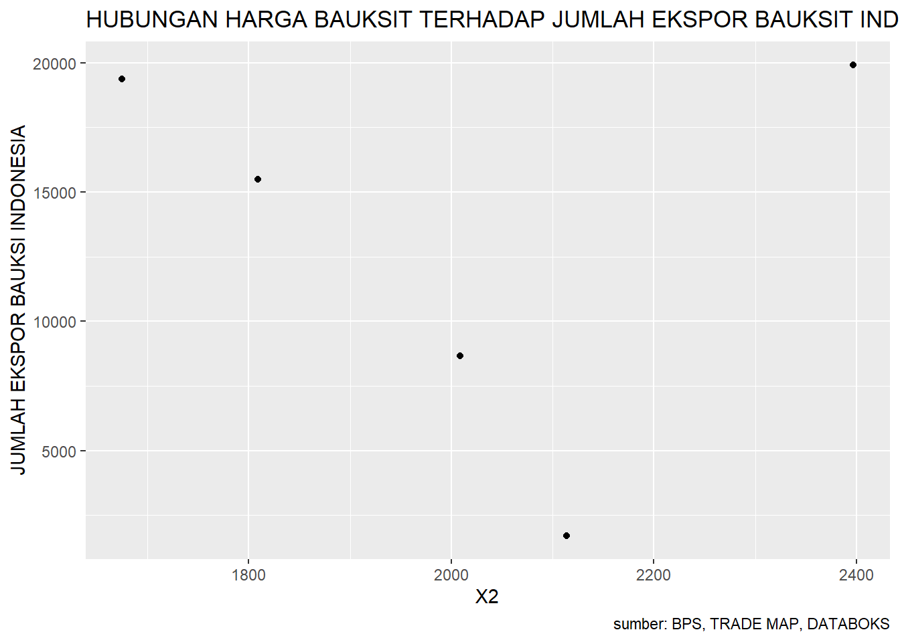

UPAYA PEMERINTAH INDONESIA DALAM MENJAGA KETERSEDIAAN BAUKSIT DI MASA MENDATANG
Metode Penelitian Politeknik APP Jakarta
Author
Ekawati Widyaningsih
Published
January 19, 2023
1 Pendahuluan
1.1 Latar belakang
Perdagangan merupakan proses kegiatan yang berkaitan erat dengan pertukaran barang dan/atau jasa guna memperoleh imbalan atas barang/jasa yang ditawarkan. Ada berbagai jenis perdagangan di dunia ini, salah satunya adalah perdagangan internasional. Pengertian dari perdagangan internasional itu sendiri adalah hubungan perniagaan antara para pihak yang berada di dua negara yang berbeda, secara garis besar dilakukan dalam bentuk ekspor dan impor (Rinaldy Eddie,dkk. 2020).Kemudian jika dikutip dari Undang – Undang Nomor 7 Tahun 2014 Tentang Perdagangan, perdagangan internasional adalah Perdagangan yang mencakup kegiatan Ekspor dan/atau Impor atas Barang dan/atau Perdagangan Jasa yang melampaui batas wilayah negara. Jadi dapat disimpulkan bahwa perdagangan internasional adalah kegiatan mengeluarkan barang dari daerah pabean atau memasukkan barang ke daerah pabean.
Dalam kegiatan perdagangan internasional dapat kita temui berbagai kegiatan, umumnya disebut dengan kegiatan ekspor dan kegiatan impor. Menurut Undang – Undang Republik Indonesia Nomor 17 Tahun 2006 tentang Perubahan Atas Undang - Undang Nomor 10 Tahun 1995 tentang Kepabeanan, ekspor adalah kegiatan memasukkan barang ke dalam daerah pabean sedangkan impor adalah kegiatan mengeluarkan barang ke luar daerah pabean. Kedua proses perdagangan internasional tersebut dijalani oleh banyak pihak. Dalam kegiatan ekspor umumnya dilakukan oleh eksportir dan kegiatan impor dilakukan oleh importir. Menurut Undang – Undang Nomor 7 Tahun 2014 Tentang Perdagangan, eksportir adalah orang perseorangan atau lembaga atau badan usaha, baik yang berbentuk badan hukum maupun bukan badan hukum, yang melakukan Ekspor, sedangkan importir adalah orang perseorangan atau lembaga atau badan usaha baik yang berbentuk badan hukum maupun bukan badan hukum yang melakukan Impor.
Indonesia merupakan salah satu negara yang memiliki tingkat ekspor dan impor yang cukup tinggi pada beberapa komoditas. Indonesia ikut serta secara aktif dalam kegiatan ekspor dan impor, terlebih setelah tergabung pada World Trade Organization sejak tahun 1995 silam dan semakin meningkat sejak Indonesia ikut menyepakati perjanjian pedagangan bebas atau biasa dikenal dengan Free Trade Agreement (FTA). Dengan berbagai kesepakatan yang sudah disetujui dalam FTA, Indonesia memiliki akses tambahan dalam hal penghapusan tarif ekspor impor dan memperoleh akses hambatan non tarif dalam perdagangan barang, kemudian memperoleh keluasan akses pasar dan memperoleh kondisi pasar yang kondusif dalam menyediakan produk jasa dalam perdagangan jasa, dan memperoleh perlindungan dan dukungan investasi untuk pasar investasi.
Jika dilihat dari kondisi selama 3 tahun terakhir dimana terjadi kemunduran perkembangan dalam banyak aspek kehidupan dikarenakan terjadinya wabah penyakit baru yaitu wabah COVID – 19 membuat Indonesia juga menjadi salah satu negara yang terkena dampaknya. Menurut data dari www.trademap.org 5 tahun terakhir, Indonesia mengalami penurunan nilai ekspor dan nilai impor yang cukup signifikan di tahun 2019 dan 2020 sekaligus mengalami perlambatan nilai ekspor dan nilai impor sejak tahun tersebut.
DATA EKSPOR INDONESIA
TAHUN
JUMLAH EKSPOR INDONESIA ($)
2017
168.810.637,00
2018
180.215.036,00
2019
167.682.996,00
2020
163.306.490,00
2021
228.231.164,00
DATA IMPOR INDONESIA
TAHUN
JUMLAH IMPOR INDONESIA ($)
2017
158.925.150,00
2018
188.711.246,00
2019
1271.275.737,00
2020
141.622.127,00
2021
195.712.409,00
Jika dilihat dari data tersebut, tingkat ekspor dan impor Indonesia dalam 5 tahun terakhir terjadi penurunan di tahun 2018 s.d. 2020. Lalu keduanya berhasil meningkat kembali di tahun 2021. Kondisi ini terjadi karena pada tahun 2018 s.d. 2020 terjadi perubahan kondisi seluruh aspek kehidupan akibat wabah COVID - 19 dan Indonesia baru bisa kembali menyesuaikan diri terhitung sejak tahun 2021 sehingga menyebabkan angka ekspor dan impor baru bisa meningkat kembali pada tahun tersebut. Walaupun angka ekspor Indonesia terlihat cukup fluktuatif, akan tetapi terdapat beberapa komoditas yang memiliki jumlah ekspor yang semakin meningkat setiap tahunnya. Komoditas tersebut adalah komoditas dalam sektor barang tambang mineral.
Hasil tambang Indonesia cukup tinggi minatnya di pasar dunia. Hal itu dikarenakan Indonesia mampu menyediakan berbagai hasil tambang dalam jumlah yang besar. Hasil tambang tersebut sangat diperlukan bagi negara – negara besar dalam mengembangkan sektor industri hingga teknologi yang sedang mereka kembangkan. Terlihat sangat menguntungkan sebab Indonesia mampu memperoleh devisa negara yang cukup besar jika melakukan ekspor barang tambang mineral tersebut, terlebih ketersediaannya di Indonesia masih cukup tinggi. Akan tetapi akan jauh lebih menguntungkan jika Indonesia tidak melakukan ekspor komoditas hanya dalam bentuk mentahnya saja, tapi dalam bentuk komoditas yang sudah di olah. Hal itu dikarenakan harga jual komoditas mentah jauh lebih rendah dibandingkan harga jual komoditas olahan, namun Indonesia belum bisa melakukan pengolahan yang efektif untuk komoditas barang tambang mineral. Hasilnya Indonesia harus merelakan untuk mengekspor komoditas dalam bentuk mentah dengan jumlah yang banyak ke negara lain untuk di olah dan selanjutnya dimanfaatkan oleh negara tersebut. Keputusan yang dijalani Indonesia ini di nilai oleh Presiden Republik Indonesia Ke-7 yaitu Ir. Joko Widodo akan mengancam ketersediaan bahan baku mentah komoditas tambang mineral Indonesia di masa mendatang
1.2 Ruang lingkup
Bauksit adalah salah satu komoditas yang termasuk dalam golongan tambang mineral mentah. Jika dilihat dalam 5 tahun terakhir, saat ini komoditas bauksit sedang berada pada puncak daya minatnya. Hal itu terjadi karena menurut data dari www.katadata.id , Indonesia merupakan salah satu negara penghasil bauksit terbesar ke – 6 di dunia, sehingga banyak negara yang mengimpor bauksit mentah dari Indonesia sebab Indonesia bisa menyediakan dalam jumlah yang banyak dan harga yang relatif lebih rendah jika dibandingkan dengan harga bauksit olahan. Selain dilihat dari segi harga dan jumlahnya, bauksit ini merupakan salah satu komoditas bernilai tinggi karena memiliki manfaat yang banyak. Bauksit bisa digunakan sebagai bahan produksi industri pipa, konstruksi, alat olahraga, penerbangan, kabel, alat rumah tangga, furnitur, hingga otomotif. Bauksit juga bisa dimanfaatkan sebagai pendukung dalam kosmetik, keramik, farmasi, dan pemurnian air.
Tingginya alternatif pemanfaatan komoditas bauksit, jika pengolahan bisa dilakukan secara maksimal maka dapat bermanfaat dalam meningkatkan devisa negara, membantu menstabilkan keadaan ekonomi suatu negara, membuka banyak lapangan kerja baru, dan mendorong pertumbuhan ekonomi ke arah yang lebih baik bagi Indonesia. Presiden Republik Indonesia Ke-7 yaitu Ir. Joko Widodo melihat potensi bauksit Indonesia jika di ekspor sebagai produk olahan atau produk jadi sehingga memutuskan untuk menerapkan beberapa kebijakan untuk meningkatkan efektivitas dalam meningkatkan daya jual bauksit sekaligus mengurangi ekspor berlebih terhadap bauksit mentah. Artikel ini akan membaha supaya yang dilakukan pemerintah Indonesia dalam menjaga ketersediaan bauksit di masa mendatang.
1.3 Rumusan masalah
Bagaimana efektivitas ekspor komoditas bauksit mentah terhadap pendapatan negara Indonesia?
Bagaimana kondisi ketersediaan bauksit mentah Indonesia di masa mendatang?
Bagaimana dampak yang ditimbulkan dengan semakin meningkatnya ekspor bauksit mentah Indonesia?
Bagaimana tanggapan pemerintah Indonesia terhadap dampak yang ditimbulkan dari semakin meningkatnya ekspor bauksit mentah?
Bagaimana upaya yang dilakukan oleh pemerintah Indonesia dalam mengatasi dampak yang ditimbulkan dari semakin meningkatnya ekspor bauksit mentah?
1.4 Tujuan dan manfaat penelitian
Untuk mengetahui kontribusi yang diberikan dari kegiatan ekspor komoditas bauksit mentah terhadap pendapatan negara Indonesia
Untuk mengetahui prediksi ketersediaan bauksit mentah Indonesia di masa mendatang jika pada saat ini masih terus dijalani kegiatan ekspor bauksit mentah secara besar – besaran tanpa mementingkan resiko yang akan terjadi di masa mendatang
Untuk mengetahui dampak yang ditimbulkan karena melakukan ekspor bauksit mentah secara terus menerus tanpa mementingkan resiko yang akan hadir di masa mendatang
Untuk mengetahui tanggapan yang diberikan oleh pemerintah terhadap dampak yang ditimbulkan dari semakin meningkatnya ekspor bauksit mentah di Indonesia
Untuk mengetahui upaya yang dilakukan oleh pemerintah Indonesia dalam mengatasi dampak yang ditimbulkan dari semakin meningkatnya ekspor bauksit mentah
1.5 Package
Package yang digunakan :
library(readxl)
library(tidyverse)
2 Studi pustaka
TEORI 1
Hasil tambang mineral dan batu bara merupakan salah satu sumber daya alam yang berharga bagi Indonesia. Walaupun jumlahnya terhitung cukup banyak, akan tetapi melihat kondisinya yang sulit diperbaharui membuat Indonesia harus mengambil langkah untuk menghemat penggunaan bahan baku tersebut. Menyikapi hal tersebut, pemerintah Indonesia menetapkan Undang – Undang Nomor 4 Tahun 2009 Tentang Pertambangan Mineral Dan Batubara yang akan dijadikan dasar dalam pengelolaan komoditi pertambangan dan mineral.
Pada Undang – Undang tersebut menyebutkan tentang tujuan pengelolaan komoditi pertambangan mineral dan batu bara yaitu guna menjamin tersedianya mineral dan batu bara untuk kebutuhan dalam negeri dan membantu menyokong komoditi tersebut dalam bersaing pasar nasional, regional, dan internasional. Melihat tujuan tersebut, bisa disimpulkan bahwa komoditi mineral dan batu bara sepenuhnya dikuasai oleh negara dan akan dimanfaatkan demi meningkatkan kesejahteraan rakyat. Walaupun demikian, masing masing pemerintah daerah, pemerintah provinsi, dan pemerintah nasional memiliki wewenangnya sendiri dalam proses pemanfaatan komoditi mineral dan batu bara.
Beberapa wewenang dari masing – masing pemerintah yaitu berkenaan dengan penetapan wilayah pertambangan yang harus mempertimbangkan segala aspek kehidupan disekitar daerah tersebut, pemberian izin usaha pertambangan kepada suatu badan usaha, koperasi, atau perseorangan yang mampu memenuhi persyaratan administratif, persyaratan teknis, persyaratan lingkungan, dan persyaratan finansial. Kemudian pemerintah membatasi kepemilikan lahan hanya 1 hektare untuk perseorangan, 5 hektare untuk kelompok masyarakat, dan 10 hektare untuk koperasi. Semua izin kepemilikan tersebut hanya diberikan dalam jangka waktu 5 tahun maksimal dan dapat diperpanjang. Setelah kebijakan mengenai izin kepemilikan, pemerintah juga menetapkan batas maksimal jumlah produksi kegiatan pertambangan guna tetap menjaga ketersediaan untuk di masa mendatang
TEORI 2
Undang – Undang Nomor 3 Tahun 2020 tentang Pertambangan Mineral dan Batubara merupakan perubahan atas Undang Undang Nomor 4 Tahun 2009 tentang Pertambangan Mineral Batubara. Perubahan ini difokuskan pada pemberian kepastian terhadap investasi dalam jangka panjang, terutama bagi eksisting investor pemegang Izin Usaha Pertambangan, Perjanjian Karya Pengusahaan Pertambangan Batubara (PKP2B), Izin Usaha Pertambangan Khusus (IUPK), dan Kontrak Karya (KK). Kemudian juga terdapat perubahan penetapan sanksi yang diberikan kepada perusahaan yang tidak menjalankan proses reklamasi akan diberikan sanksi yang lebih berat. Lalu untuk menghindari proses pertambangan ilegal, pemerintah akan memberatkan hukuman bagi pihak yang melakukan aktivitas penambangan secara ilegal atau tanpa izin.
Perubahan yang dilakukan oleh pemerintah dinilai belum efektif, sebab masih ada pihak yang melihat kecacatan dari Undang – Undang tersebut. Perubahan ini dinilai menghapus hak kehidupan rakyat di lingkar tambang karena tidak memberikan jaminan keselamatan rakyat dan membuat peran negara semakin diperlemah sebab terdapat penghapusan pasal yang ammpu menutupi celah yang berpotensi menjadi praktek korupsi (Koordinator Jaringan Advokasi Tambang Kalimantan Timur, 2020). Selain dua poin utama tadi, terdapat juga penilaian bahwa Undang – Undang ini belum menjawab mengenai peningkatan nilai tambah mineral dan batu bara, terdapat beberapa tunggakan yang belum dibayarkan oleh perusahaan kepada negara, dan permasalahan pencemaran serta kerusakan lingkungan yang semakin hari semakin menghantui perkembangan kesehatan masyarakat.
Dengan adanya Undang-Undang tersebut Presiden Jokowi sempat beberapa kali melontarkan permintaan larangan ekspor bauksit pada saat Pertemuan Tahunan Bank Indonesia, 24 November 2021. Jokowi mengatakan bahwa ini perlu dilakukan agar Indonesia tidak lagi menjual bahan mentah,melainkan harus bernilai tambah terlebih dahulu setelah melalui proses pengolahan dan pemurnian di dalam negeri.Dengan demikian,negara dan rakyat akan mendapatkan keuntungan lebih besar dibandingkan hanya menjual bahan mentah. Ini adalah bentuk upaya untuk menjaga ketersediaan. Oleh karenanya berdasarkan Undang-Undang tersebut,menjadi satu hal yang penting untuk menjaga ketersediaan bauksit di masa mendatang. Presiden Jokowi menerangkan berakhirnya periode penjualan atau periode ekspor mentah bauksit berencana akan berhenti ekspor pada 10 Juni 2023.
KERANGKA PENELITIAN
3 Metode penelitian
3.1 Data
DATA PRODUKSI BAUKSIT INDONESIA TAHUN 2017 S.D. 2021 SEBAGAI VARIABEL X1
TAHUN
JUMLAH (DALAM RIBU TON)
2017
1.294
2018
5.694
2019
16.592
2020
25.860
2021
25.781
DATA HARGA BAUKSIT INDONESIA TAHUN 2017 S.D. 2021 SEBAGAI VARIABEL X2
TAHUN
JUMLAH (DALAM $)
2017
2.114
2018
2.099
2019
1.809
2020
1.675
2021
2.397
DATA JUMLAH PRODUKSI BAUKSIT INDONESIA TAHUN 2017 S.D. 2021 SEBAGAI VARIABEL Y
Call:
lm(formula = Y ~ X1 + X2, data = dat)
Residuals:
1 2 3 4 5
-2006.7 1877.6 1232.5 -1226.2 122.8
Coefficients:
Estimate Std. Error t value Pr(>|t|)
(Intercept) 5083.4120 8615.0349 0.590 0.6149
X1 0.6684 0.1022 6.537 0.0226 *
X2 -1.0525 4.1330 -0.255 0.8228
---
Signif. codes: 0 '***' 0.001 '**' 0.01 '*' 0.05 '.' 0.1 ' ' 1
Residual standard error: 2301 on 2 degrees of freedom
Multiple R-squared: 0.9561, Adjusted R-squared: 0.9121
F-statistic: 21.75 on 2 and 2 DF, p-value: 0.04395
Analisis menggunakan metode regresi multivariat atau dengan regresi linear sederhana yang menggunakan data numerik yang diproses pada R studio sebagai alat bantu dengan package readxl dan tidyverse. Analisis dilakukan dengan menggunakan 3 data yaitu data jumlah ekspor bauksit Indonesia yang berperan sebagai variabel Y, lalu data jumlah produksi bauksit Indonesia yang berperan sebagai variabel X1, dan data harga bauksit Indonesia yang berperan sebagai variabel X2. Ketiga data tersebut merupakan data yang didapatkan pada tahun 2017 s.d. 2021 dimana variabel X1 dan X2 menjadi variabel independen dan variabel Y sebagai variabel dependen. Tujuan dari analisis adalah untuk mengetahui plot dan regresi antara variabel terkait, sehingga bisa mengetahui hubungan antara jumlah produksi bauksit Indonesia dan harga bauksit Indonesia terhadap jumlah ekspor bauksit Indonesia
4 Pembahasan
4.1 Pembahasan masalah
Plot Variabel independen X1 dan Variabel dependen Y
plot(dat$X1,dat$Y,xlab="JUMLAH PRODUKSI BAUKSIT INDONESIA",ylab="JUMLAH EKSPOR BAUKSIT INDONESIA")
Ini merupakan hasil plot dari variabel independen X1 yang merupakan data jumlah produksi bauksit Indonesia dengan variabel dependen Y yang merupakan data jumlah ekspor bauksit Indonesia. Hasil plot ini didapatkan dengan melakukan run pada command :
Plot Variabel independen X2 dan Variabel dependen Y
Ini merupakan hasil plot dari variabel independen X2 yang merupakan data harga bauksit Indonesia dengan variabel dependen Y yang merupakan data jumlah ekspor bauksit Indonesia. Hasil plot ini didapatkan dengan melakukan run pada command :
Regresi Varibel Y dengan Variabel X1 + Variabel X2
Call:
lm(formula = Y ~ X1 + X2, data = dat)
Residuals:
1 2 3 4 5
-2006.7 1877.6 1232.5 -1226.2 122.8
Coefficients:
Estimate Std. Error t value Pr(>|t|)
(Intercept) 5083.4120 8615.0349 0.590 0.6149
X1 0.6684 0.1022 6.537 0.0226 *
X2 -1.0525 4.1330 -0.255 0.8228
---
Signif. codes: 0 '***' 0.001 '**' 0.01 '*' 0.05 '.' 0.1 ' ' 1
Residual standard error: 2301 on 2 degrees of freedom
Multiple R-squared: 0.9561, Adjusted R-squared: 0.9121
F-statistic: 21.75 on 2 and 2 DF, p-value: 0.04395
Ini merupakan hasil regresi variabel independen X1 dan variabel independen X2 terhadap variabel dependen Y. Hasil regresi ini didapatkan dengan melakukan run pada command :
GGPLOT HUBUNGAN JUMLAH PRODUKSI BAUKSIT (X1)TERHADAP JUMLAH EKSPOR BAUKSIT INDONESIA(Y)
Call:
lm(formula = Y ~ X1 + X2, data = dat)
Residuals:
1 2 3 4 5
-2006.7 1877.6 1232.5 -1226.2 122.8
Coefficients:
Estimate Std. Error t value Pr(>|t|)
(Intercept) 5083.4120 8615.0349 0.590 0.6149
X1 0.6684 0.1022 6.537 0.0226 *
X2 -1.0525 4.1330 -0.255 0.8228
---
Signif. codes: 0 '***' 0.001 '**' 0.01 '*' 0.05 '.' 0.1 ' ' 1
Residual standard error: 2301 on 2 degrees of freedom
Multiple R-squared: 0.9561, Adjusted R-squared: 0.9121
F-statistic: 21.75 on 2 and 2 DF, p-value: 0.04395
ggplot(data=dat,aes(x=X1,y=Y)) +geom_point() +labs(title="HUBUNGAN JUMLAH PRODUKSI BAUKSIT INDONESIA TERHADAP JUMLAH EKSPOR BAUKSIT INDONESIA",x1="PRODUKSI BAUKSIT INDONESIA",y="JUMLAH EKSPOR BAUKSI INDONESIA",caption ="sumber: BPS, TRADE MAP, DATABOKS")

GGPLOT HUBUNGAN HARGA BAUKSIT (X2) TERHADAP JUMLAH EKSPOR BAUKSIT INDONESIA (Y)
Call:
lm(formula = Y ~ X1 + X2, data = dat)
Residuals:
1 2 3 4 5
-2006.7 1877.6 1232.5 -1226.2 122.8
Coefficients:
Estimate Std. Error t value Pr(>|t|)
(Intercept) 5083.4120 8615.0349 0.590 0.6149
X1 0.6684 0.1022 6.537 0.0226 *
X2 -1.0525 4.1330 -0.255 0.8228
---
Signif. codes: 0 '***' 0.001 '**' 0.01 '*' 0.05 '.' 0.1 ' ' 1
Residual standard error: 2301 on 2 degrees of freedom
Multiple R-squared: 0.9561, Adjusted R-squared: 0.9121
F-statistic: 21.75 on 2 and 2 DF, p-value: 0.04395
ggplot(data=dat,aes(x=X2,y=Y)) +geom_point() +labs(title="HUBUNGAN HARGA BAUKSIT TERHADAP JUMLAH EKSPOR BAUKSIT INDONESIA",x2="HARGA BAUKSIT INDONESIA",y="JUMLAH EKSPOR BAUKSI INDONESIA",caption ="sumber: BPS, TRADE MAP, DATABOKS")

4.2 Analisis masalah
Dari hasil regresi yang didapatkan, kita dapat memperoleh model persamaan =
Y = 5083,4120 + 0,6684X1 - 1,0525X2
Konstanta (intercept)
Nilai intercept bernilai positif sebesar 5083,4120 yang menggambarkan jumlah ekspor bauksit Indonesia ke dunia meningkat sejumlah 5083,4120 ribu ton dengan anggapan jumlah produksi bauksit Indonesia dan harga jual bauksit Indonesia adalah 0
Persamaan regresi menunjukkan bahwa jumlah produksi bauksit Indonesia memiliki koefisien regresi 0,6684 dan signifikan sehingga memiliki arti apabila produksi bauksit Indonesia meningkat sebesar 1000 ton maka jumlah ekspor bauksit Indonesia ke dunia akan naik sebesar 0,6684 ribu ton. Hasil tersebut menjelaskan bahwa jumlah produksi bauksit Indonesia memiliki pengaruh positif dan signifikan terhadap jumlah ekspor bauksit Indonesia ke dunia. Hal ini berarti jika Indonesia mampu meningkatkan jumlah produksi bauksit mentahnya maka akan membantu meningkatkan jumlah ekspor bauksit Indonesia ke seluruh dunia
Harga bauksit Indonesia memiliki koefisien regresi -1,0525 yang memiliki arti jika harga bauksit Indonesia naik sebesar 1 USD maka jumlah ekspor bauksit Indonesia akan turun 1,0525 ribu ton/tahun. Hasil tersebut menjelaskan bahwa harga bauksit Indonesia memiliki pengaruh negarif bagi jumlah ekspor bauksit Indonesia ke seluruh dunia. Hal itu dikarenakan apabila harga bauksit mentah Indonesia mengalami peningkatan maka akan terjadi penurunan minat beli konsumen terhadap komoditas tersebut. Jadi akan sesuai dengan teori permintaan dan penawaran yang menyebutkan bahwa apabila terjadi kenaikan harga maka akan menyebabkan penurunan jumlah permintaan konsumen.
Jadi melihat dari regresi yang dihasilkan, bisa menjadi gambaran bagi pemerintah dalam menentukan upaya yang dilakukan. Pemerintah harus mampu memastikan agar kenaikan harga yang terjadi kedepannya tidak mengurangi tingkat minat konsumen sebab pemerintah berencana untuk meningkatkan mutu komoditas yang tadinya bahan mentah menjadi bahan olahan. Oleh karena itu, upaya yang harus diambil adalah memastikan daya beli konsumen tetap tinggi pada saat harga komoditas meningkat diikuti tapi harus diikuti oleh perbaikan dari kualitas komoditas tersebut.
5 Kesimpulan
Berdasarkan pengujian terhadap variabel penelitian, bisa ditarik kesimpulan sebagai berikut :
Jumlah produksi bauksit Indonesia berpengaruh positif dan signifikan terhadap jumlah ekspor bauksit Indonesia ke seluruh dunia dengan nilai 0,6684. Itu artinya apabila jumlah produksi sebesar meningkat 1000 ton maka jumlah ekspor bauksit Indonesia ke seluruh dunia akan naik sebesar 0,6684 ribu ton.
Harga bauksit Indonesia berpengaruh negatif dan tidak signifikan terhadap jumlah ekspor bauksit Indonesia ke seluruh dunia dengan nilai koefisien -1,0525 yang memiliki arti jika harga bauksit Indonesia naik sebesar 1 USD maka jumlah ekspor bauksit Indonesia akan turun 1,0525 ribu ton/tahun. Hal itu dikarenakan apabila harga bauksit mentah Indonesia mengalami peningkatan maka akan terjadi penurunan minat beli konsumen terhadap komoditas tersebut.
Dari 2 variabel independen hanya ada 1 variabel yang berpengaruh positif dan signifikan dan 1 variabel lainnya berpengaruh negatif tetapi tidak signifikan. Oleh karena itu, jumlah produksi jauh lebih berpengaruh terhadap kegiatan ekspornya. Jadi pemerintah bisa melakukan upaya untuk meningkatkan jumlah produksi, akan tetapi harus tetap berupaya melakukan pengolahan untuk meningkatkan nilai komoditas tersebut sehingga bisa di jual dengan harga yang lebih tinggi tetapi dengan diikuti kualitas yang lebih baik juga. Upaya itu dilakukan juga guna menekan angka ekspor komoditas bauksit mentah, sebab kalau terlalu sering melakukan ekspor bahan mentah akan mengancam ketersediaannya dimasa mendatang.
Variabel independen 2 (X2) berpengaruh negatif karena pada saat ini Indonesia hanya mampu mengekspor dalam bentuk mentahnya saja, jadi kenaikan harga yang terjadi dinilai merugikan konsumen karena mereka masih harus mengeluarkan biaya untuk mengolah komoditas